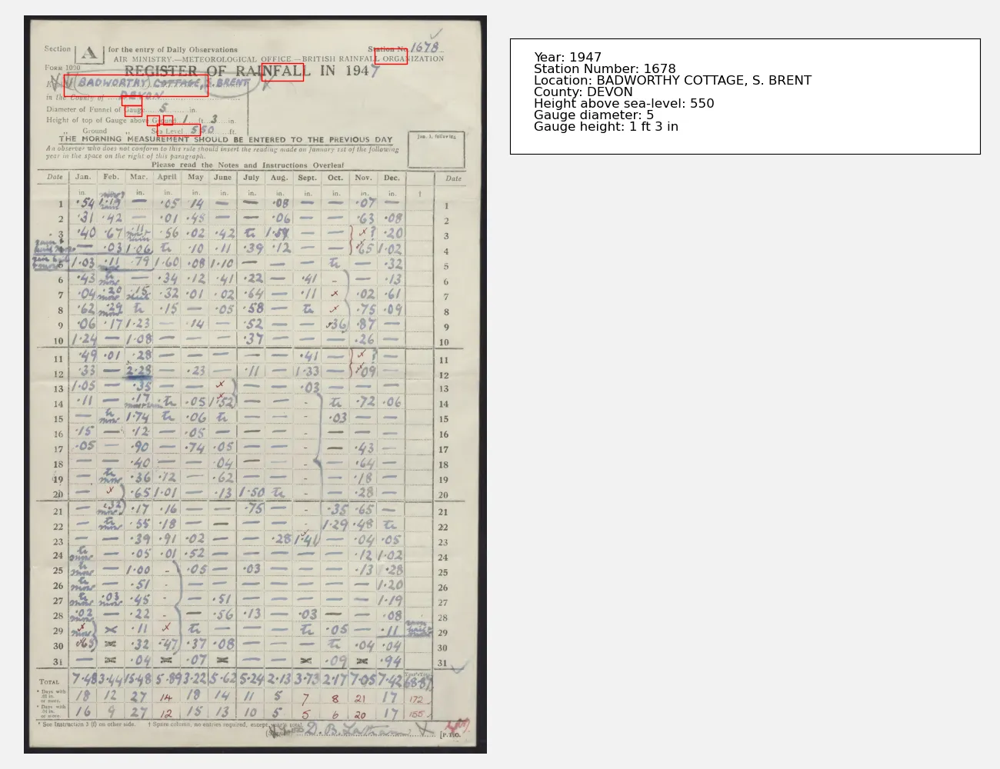

Page locations¶
The Gemini documentation describes a way to get page bounding boxes for items on the page. This is not a vital feature, but it is useful for debugging and for understanding how Gemini is interpreting the page.
So we modify the existing code to request a bounding box for each item.
#!/usr/bin/env python3
# Basic test of the Gemini API - get the station metadata as
# structured output.
import os
import PIL.Image
import google.generativeai as genai
import typing_extensions as typing
# You will need an API key get it from https://ai.google.dev/gemini-api/docs/api-key
# I keep my API key in the .gemini_api file in my home directory.
with open("%s/.gemini_api" % os.getenv("HOME"), "r") as file:
api_key = file.read().strip()
# Default protocol is 'GRPC' - but that is blocked by the Office firewall.
# Use 'REST' instead.
genai.configure(api_key=api_key, transport="rest")
# Specify a structure for the desired output
class MetaData(typing.TypedDict):
Year: int
Year_bounding_box: list[int]
StationNumber: int
StationNumber_bounding_box: list[int]
Location: str
Location_bounding_box: list[int]
County: str
County_bounding_box: list[int]
Sea_level_height: int
Sea_level_height_bounding_box: list[int]
Gauge_diameter: int
Gauge_diameter_bounding_box: list[int]
Gauge_height_feet: int
Gauge_height_feet_bounding_box: list[int]
Gauge_height_inches: int
Gauge_height_inches_bounding_box: list[int]
# Load the sample image
img = PIL.Image.open(
"../../images/jpgs_300dpi/Devon_1941-1950_RainNos_1651-1689-293.jpg"
)
# Pick an AI to use - this one is the latest as of 2025-01-29
model = genai.GenerativeModel("gemini-2.0-flash-exp")
# Ask a question about the image
result = model.generate_content(
[
img,
"\n\n",
"List the station metadata. Also give the bounding box of each item in [xmin,ymin,xmax,ymax] format.",
],
generation_config=genai.GenerationConfig(
response_mime_type="application/json", response_schema=MetaData
),
)
# Structured data as JSON
with open("locations.json", "w") as file:
file.write(result.text)
with open("rest.txt", "w") as file:
file.write(str(result))
And bounding boxes are indeed added to the JSON output
{
"County": "DEVON",
"County_bounding_box": [
108,
211,
122,
254
],
"Gauge_diameter": 5,
"Gauge_diameter_bounding_box": [
122,
218,
136,
255
],
"Gauge_height_feet": 1,
"Gauge_height_feet_bounding_box": [
135,
267,
149,
292
],
"Gauge_height_inches": 3,
"Gauge_height_inches_bounding_box": [
135,
301,
148,
321
],
"Location": "BADWORTHY COTTAGE, S. BRENT",
"Location_bounding_box": [
80,
86,
109,
398
],
"Sea_level_height": 550,
"Sea_level_height_bounding_box": [
147,
288,
162,
381
],
"StationNumber": 1678,
"StationNumber_bounding_box": [
45,
759,
66,
828
],
"Year": 1947,
"Year_bounding_box": [
64,
514,
88,
603
]
}
Unfortunately it doesn’t work - the locations are not correct. It sort-of-works, and it’s not clear exactly what is going wrong, but at the moment this feature is not useable.
